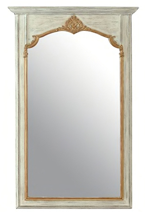

Couleur : blanc
Forme : rectangle
Style : ce miroir rectangulaire comporte un trumeau imitant les pratiques de décoration qui ont eu cours à partir du règne de Louis XVI et se sont poursuivies au XIXe siècle. La pièce imitant le bois sculpté est soulignée d'une ornementation florale en cuivre.
Époque : XIXᵉ siècle
Cadre : le miroir est entouré d’un cadre en résine fabriqué à la commande dans un atelier d’artisan en France.
Hauteur : 176 cm
Largeur : 97 cm
Date d’acquisition : 2019-11-20
Moyen d’acquisition : achat
Prix d’achat : 715 €
Ce miroir a été acquis initialement par le collectionneur dans un magasin de la chaîne française Maisons du monde. La description du miroir est consultable sous ce lien.
En ceci qu’il est rectangulaire et orné, il ressemble au miroir 29 de la collection.
En février 2021, le prix du miroir était estimé à 715 €.
Ce miroir à fixer convient particulièrement à un salon, ou bien à une chambre, une entrée pour la vérification de l’habillement de pied en cap. Selon le vendeur, il est idéal pour un salon ou même un dressing